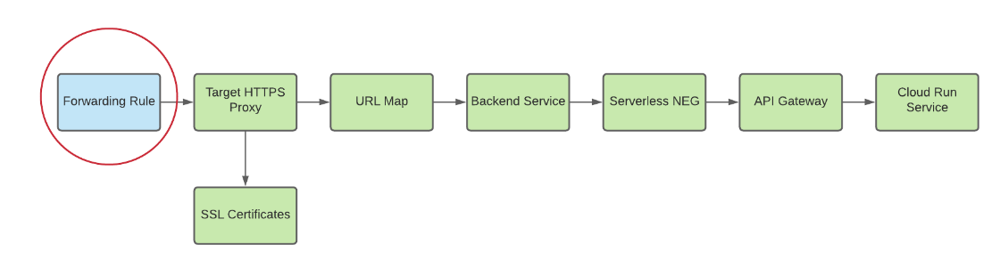
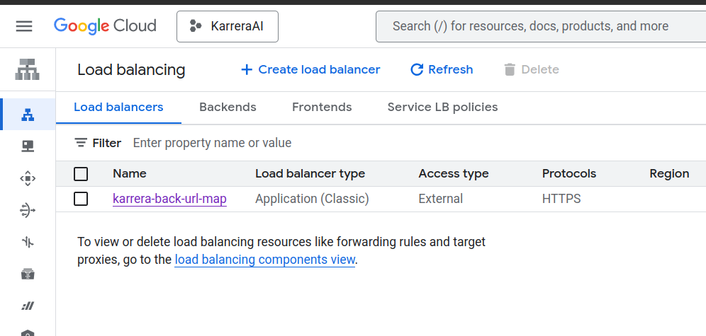
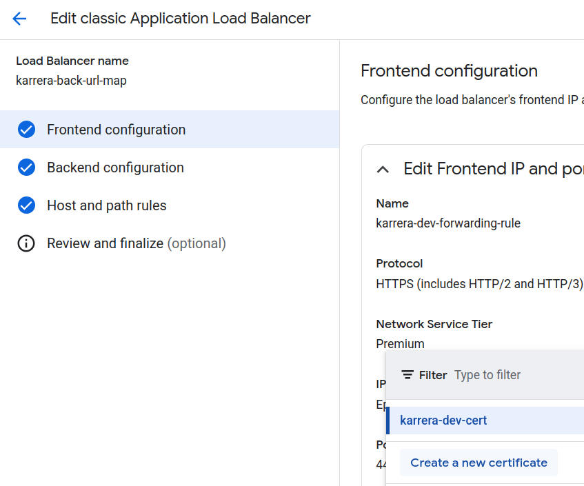
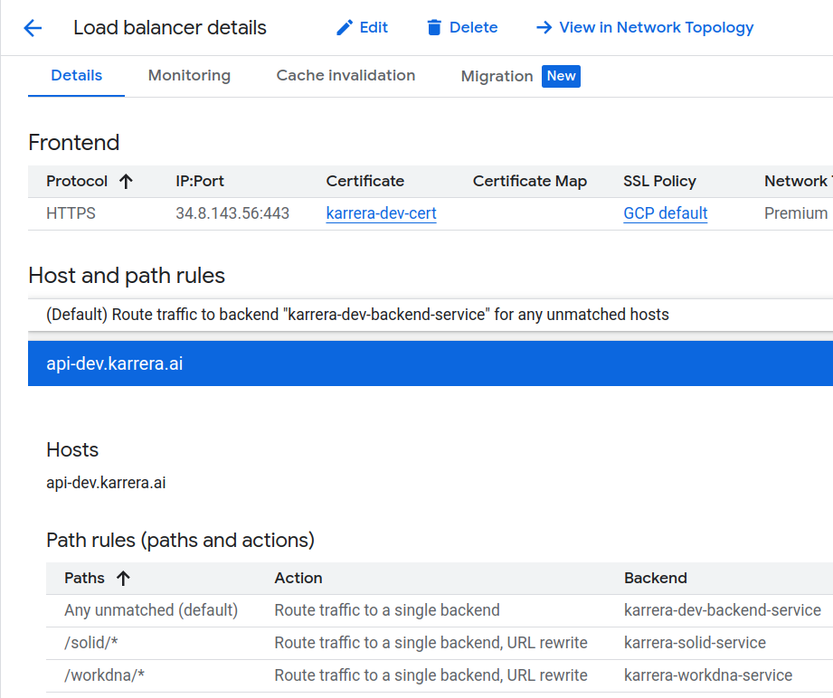

Load Balancer Setup
This document explains the setup of the GCP Load Balancer for all backend microservices managed by API Gateway, unifying all backend components into the same DNS(dev.karrera.ai/BackendServicePath).
Overview: Creating DNS for API Gateway
A load balancer is not required for API Gateway to function, it does allow your gateway to take advantage of the benefits of a load balancer. For example, using a global external Application Load Balancer with API Gateway lets you:
- Use custom domains.
- Leverage Google Cloud Armor as a network security service.
- Manage efficient load balancing across gateways in multiple locations.
- Implement advanced traffic management.
What we need here is to set a custom domain for our backend microservices managed by API Gateway.
The whole flow can be illustrated as image below:

Implementation Steps:
Step 1: Create serverless NEG for API-Gateway
gcloud beta compute network-endpoint-groups create SERVERLESS_NEG_NAME \
--region=REGION_ID \
--network-endpoint-type=serverless \
--serverless-deployment-platform=apigateway.googleapis.com \
--serverless-deployment-resource=GATEWAY_ID
gcloud beta compute network-endpoint-groups create karrera-dev-neg \
--region=us-central1 \
--network-endpoint-type=serverless \
--serverless-deployment-platform=apigateway.googleapis.com \
--serverless-deployment-resource=gateway-karrera-backend
Step 2: Create a backend service to define how the global external Application Load Balancer distributes traffic
To create a backend service
To add your serverless NEG as a backend to the backend service, run the following command
gcloud compute backend-services add-backend BACKEND_SERVICE_NAME \
--global \
--network-endpoint-group=SERVERLESS_NEG_NAME \
--network-endpoint-group-region=REGION_ID
Step 3: Create a URL map to route incoming requests to the backend service
To create the URL map, run the following command
Or create it directly from console: 
Step 4: Create an SSL certificate for your target proxy
To create a self-managed SSL certificate resource:
gcloud compute ssl-certificates create SSL_CERTIFICATE_NAME \
--certificate CRT_FILE_PATH \
--private-key KEY_FILE_PATH
Or create it directly from console, in Load Balancer's Frontend configuration: 
Step 5: Create a target HTTP(S) proxy to route requests to your URL map
To create the target proxy, use the following command:
gcloud compute ssl-certificates create gcloud compute target-https-proxies create TARGET_HTTPS_PROXY_NAME \
--ssl-certificates=SSL_CERT_NAME \
--url-map=URL_MAP_NAME
Step 6: Create a forwarding rule to route incoming requests to the proxy
Use the following command to create the forwarding rule:
gcloud compute forwarding-rules create HTTPS_FORWARDING_RULE_NAME \
--target-https-proxy=TARGET_HTTPS_PROXY_NAME \
--global \
--ports=443
Step 7: Update DNS records with load balancer IP address

Creating multiple backend services for LB
Repeat step 1 and 2 for new backend service, and update the URL Map path rules.